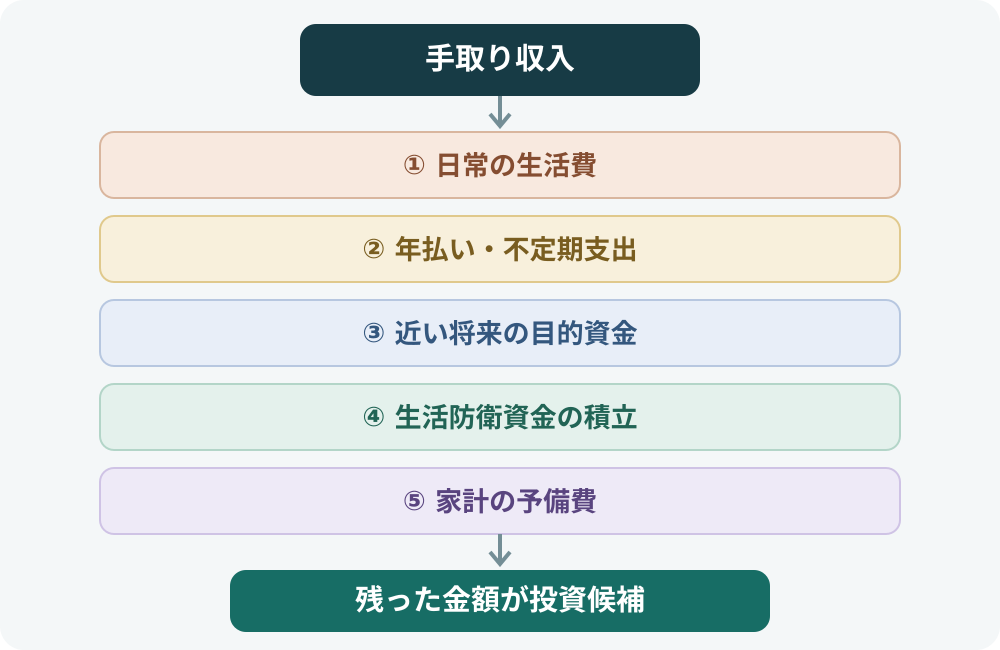
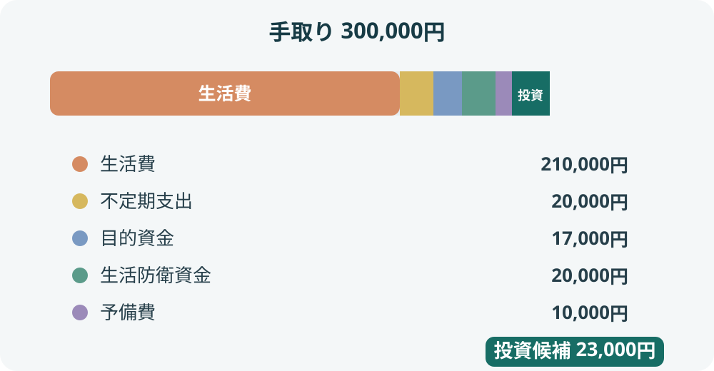

投資に回すお金はいくら？家計から無理のない投資額を決める方法
「毎月いくら投資すればいいのか」は、収入の何％という数字だけでは決められません。生活費、年払いの支出、近い将来に使うお金、急な収入減への備えを先に整理し、残ったお金から投資額を考えます。この記事では、家計から順番に計算する方法を具体例で紹介します。
手取り収入から日常の生活費、不定期支出、近い将来の目的資金、生活防衛資金の不足分、家計の予備費を確保した後に投資額を考えます。計算で残った金額は投資してよい上限の候補であり、全額を投資する必要はありません。
1. 投資額は収入の割合だけで決めない
「手取りの10％を投資する」「毎月3万円を積み立てる」といった目安を見かけることがあります。しかし、同じ手取り収入でも、家賃・住宅ローン、家族構成、教育費、借入返済、収入の安定性などによって、投資に使える金額は異なります。
割合や金額を先に決めて家計を合わせるのではなく、実際の収支と今後の支出から投資額を逆算しましょう。お金を使う時期で分けると、必要な備えと投資資金を整理しやすくなります。

2. 家計から投資可能額を計算する
家計簿アプリ、銀行口座、クレジットカードの明細などを使い、できれば数か月分の実績を確認します。次の項目を順番に整理しましょう。
- 手取り収入：税金や社会保険料などを差し引いた、実際に使える収入。
- 日常の生活費：住居費、食費、光熱費、通信費、保険料、交通費、日用品、娯楽費など。
- 年払い・不定期支出：自動車税、保険料、車検、家電の買い替え、帰省、冠婚葬祭など。年間合計を12で割って月割りする。
- 近い将来の目的資金：旅行、引っ越し、車、教育費など、使う時期と金額が決まっている支出に向けた積立。
- 生活防衛資金の不足分：必要額に届いていない場合、目標額までの不足分を何か月で準備するか決める。
- 家計の予備費：物価上昇や想定外の出費、月ごとの支出のブレに対応する余裕。
投資に回す金額の候補 ＝ 手取り収入 − 日常の生活費 − 不定期支出の月割り − 目的資金の積立 − 生活防衛資金の積立 − 家計の予備費
生活防衛資金がすでに十分に確保できている場合、そのための毎月の積立は差し引きません。不足している場合は、投資より先に現金での備えを優先する選択肢があります。
年に数回の支出は月割りしておく
毎月の家計だけを見ると黒字でも、年払いの保険料や税金、車検、帰省費用などが発生する月に赤字になることがあります。たとえば年間24万円の不定期支出があるなら、毎月2万円ずつ別に確保しておくと、支払い月に投資資金を取り崩さずに済みます。
近い将来に使うお金は投資資金と分ける
住宅購入や進学、車の買い替えなど、使う時期が決まっているお金は、必要額と準備期間を整理します。必要な時期に値下がりしている可能性があるため、価格変動のある投資商品に入れるかどうかは慎重に考えましょう。
3. 月30万円の家計で計算してみる
手取り収入が月30万円の家計を仮定します。以下は計算方法を説明するための例であり、平均的な家計や推奨額を示すものではありません。
| 項目 | 月額 | 考え方 |
|---|---|---|
| 手取り収入 | 300,000円 | 給与などの手取り |
| 日常の生活費 | −210,000円 | 住居費・食費・光熱費・通信費など |
| 不定期支出の積立 | −20,000円 | 年間24万円の支出を月割り |
| 近い将来の目的資金 | −17,000円 | 3年後までに約60万円を準備する想定 |
| 生活防衛資金の積立 | −20,000円 | 必要額に届くまでの積立 |
| 家計の予備費 | −10,000円 | 月ごとの支出のブレに備える |
| 投資に回せる金額の候補 | 23,000円 | 上記を差し引いた残額 |

23,000円は計算上の候補ですが、必ず全額を投資する必要はありません。最初は月10,000円など、さらに少ない金額から始め、数か月続けても生活費や予定支出に不足が出ないか確かめる方法もあります。生活防衛資金を確保できていれば、その積立分は投資候補額に戻ります。
4. 残るお金がない場合
計算した結果がゼロ、またはマイナスでも、無理に投資額を作る必要はありません。今は投資を始めるより、家計を安定させることが優先になる場合があります。
- 数か月分の収支を記録し、支出の見落としがないか確認する。
- 通信費、保険料、サブスクリプションなど継続的な固定費を見直せるか検討する。
- 年払い・不定期支出を月割りし、支払い月に赤字にならない計画にする。
- 生活防衛資金や近い将来の目的資金が不足していれば、預貯金での準備を優先する。
- 借入やリボ払いを使って投資資金を作らない。
食費や必要な医療費など、生活に必要な支出を無理に削って投資額を増やすことが目的ではありません。
5. 収入が変動する場合
自営業・フリーランス、歩合給、シフト勤務などで収入が月ごとに変わる場合は、収入が多かった月を基準に投資額を固定しないようにします。過去の入金と必要経費、税金・社会保険料などを確認し、収入が少ない月でも続けられる金額を基本に考えます。
毎月の積立額を小さめに設定し、余裕がある月だけ追加する方法もあります。ボーナスも毎年同じ金額が支給されるとは限らないため、基本の積立額は通常の手取り収入で無理なく続けられる範囲にしましょう。
6. ボーナスやまとまったお金の場合
一時金が入ったときも、全額をそのまま投資に回すのではなく、近く支払う税金・学費・住宅関連費用、年払い支出、生活防衛資金の不足分などを先に確保します。当面使う予定のない部分を投資候補として考えましょう。
まとまった資金を一度に投資するか、時期を分けて投資するかは、資金を用意できた時期、投資期間、値下がりした場合の心理的な負担などによって異なります。定期的に一定額を買い付ける仕組みは、「積立投資とは？」で確認できます。
7. 投資額を見直すタイミング
投資額は一度決めたら固定するものではありません。昇給・転職・退職、引っ越し、結婚、出産、進学、住宅購入、介護などで家計が変わったら、収支と目的を確認し直します。
始めたばかりの時期は数か月続けてみて、月末に預金を取り崩していないか、年払い支出に備えられているか、生活の満足度を下げすぎていないかを確認しましょう。余裕があると分かってから増やすことも、家計に変化があれば減額・一時停止することもできます。
- 手取り収入と毎月の支出を把握した
- 年払い・不定期支出を月割りで確保した
- 近い将来に使う目的資金を投資資金と分けた
- 生活防衛資金の必要額と不足分を確認した
- 月ごとの支出のブレに備える予備費を残した
- 残った金額を上限と考え、少なめの金額から検討した
まとめ：投資額は家計の残りから決める
毎月の投資額は、収入の一律の割合ではなく、実際の家計から決めます。生活費、不定期支出、近い将来の目的資金、生活防衛資金、予備費を先に確保し、残った金額を投資候補として考えます。計算上の金額を全額投資する必要はなく、少額から始めて家計の状態を確認しながら調整できます。
投資額の目安が決まったら、購入方法を整理しましょう。定額で買い付ける仕組みは「積立投資とは？」、投資前に確認する7つの項目は「投資を始める前に確認したい7つのこと」で解説しています。
公式情報・参考資料
- 金融庁：資産形成の基本 — 家計管理、収支の把握、ライフプランニング、貯蓄と投資の使い分け。
- 政府広報オンライン：お金の勉強をしませんか？社会人として知っておきたいお金の話 — 収支の把握、支出の優先順位、使う時期によるお金の整理。
- J-FLEC：将来のために、どうお金を貯めて、増やす？ — 貯蓄と投資の役割、両者のバランス。